The making is the session. Words come after.
Ness — Creative Therapy App
Most therapy apps ask you to describe how you feel. But some people can't. Not because they won't — because the words aren't there yet. Yet every tool assumes verbal clarity at the exact moment people have the least access to words.
Three things the research kept saying.
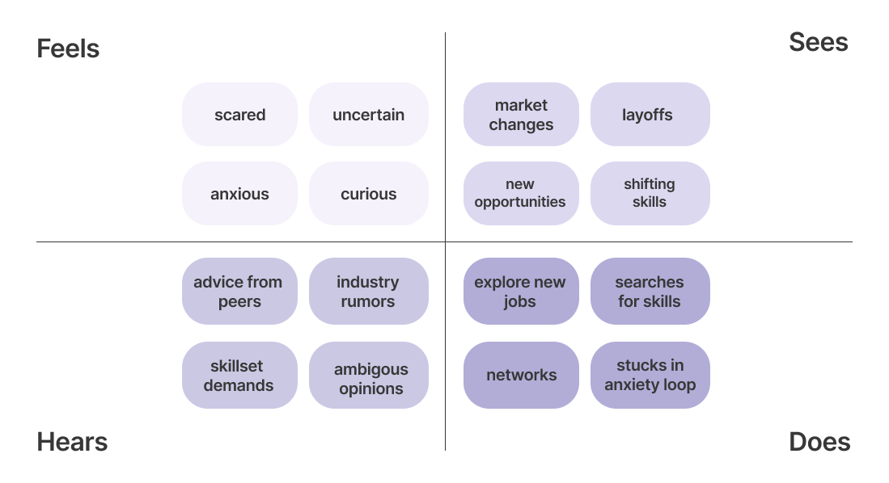
Research sources
Baumel A et al. (2019). Real-World Implementation Outcomes of Mental Health Apps. JMIR Mental Health.
Tyron G et al. (2024). Visual expression and emotional processing in non-verbal populations.
Soyer R (2015). Phototherapy as a tool of emotional identification. ERIC.
Malchiodi C (2011). Handbook of Art Therapy. Guilford Press.
"How do you make therapy feel natural for people who think and feel in images, not sentences?"
"I needed something that goes beyond reflection — something that guides creativity."
Before the canvas opens, the app learns what state you're in — without asking you to explain it.
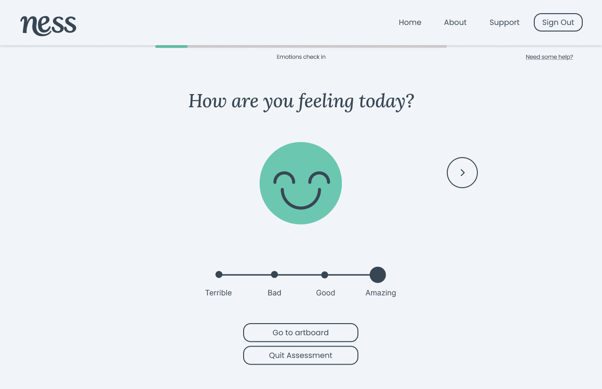
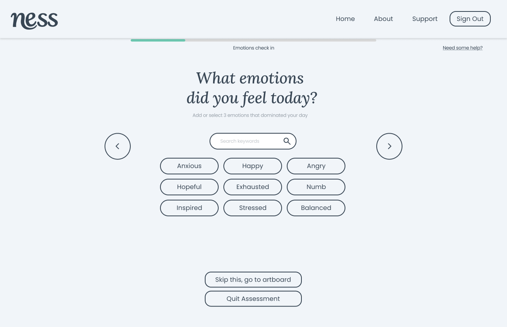
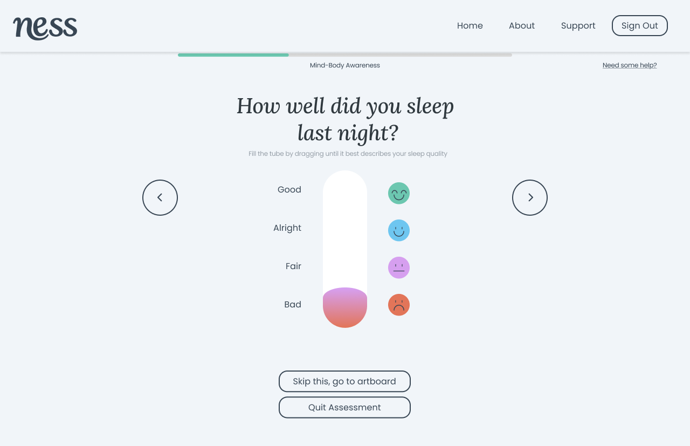
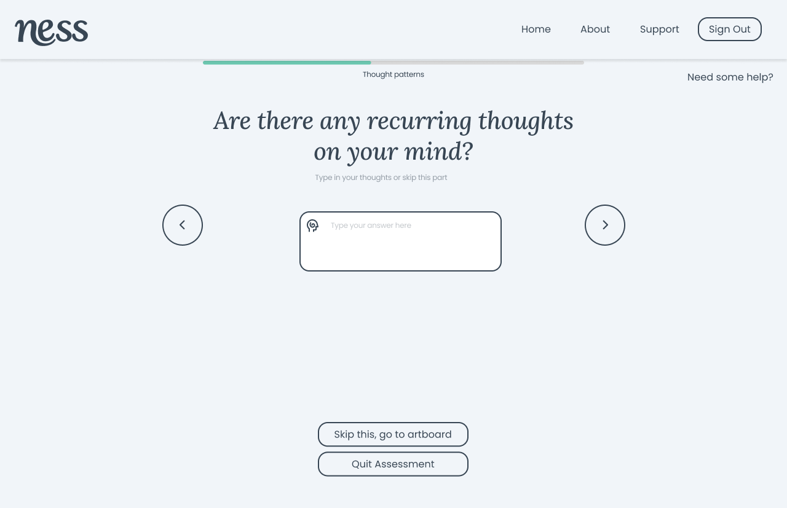
The guide doesn't speak until you've made something. Then it notices — without naming.
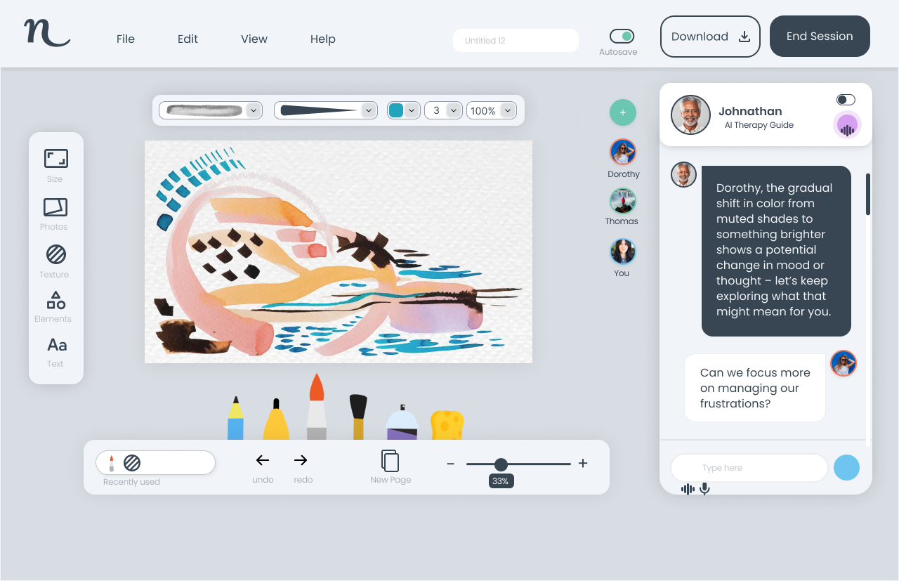
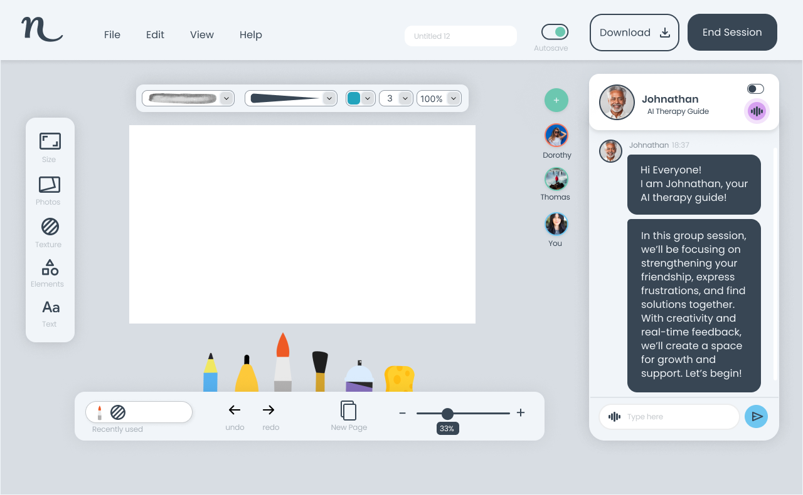
The gradual shift in colour from muted shades to something brighter shows a potential change in mood or thought — let's keep exploring what that might mean for you.
Johnathan observes pattern. He reflects without labelling. The person stays in control of what the observation means — or whether it means anything at all.
Two rounds of testing. Each one changed something specific.
| What testing found | What changed | Outcome |
|---|---|---|
| 70% of users couldn't connect icons to their function | Labels added beneath each icon, icons replaced with familiar visual patterns | 100% icon comprehension in Test 2 |
| 80% confused the therapeutic chat panel with a user profile | Panel given explicit title "Johnathan, AI Therapy Guide" with visual separation | 100% panel comprehension in Test 2 |
| 40% wanted core creation tools more accessible | Brush, pen, pencil, sponge grouped in a persistent tray at the bottom | 60% rated tool placement as satisfactory in Test 2 |
n=5 per round. Small sample — findings used directionally, not as conclusive evidence.
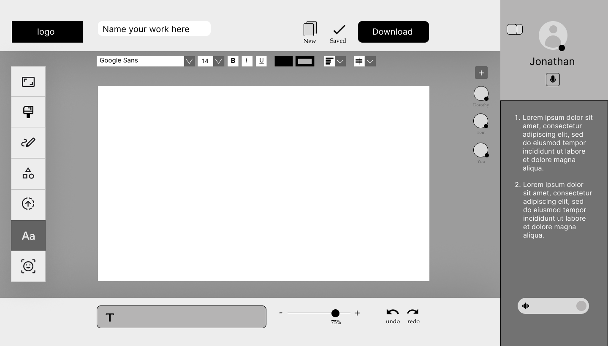
"Jonathan" reads as a participant list, not a therapy guide.
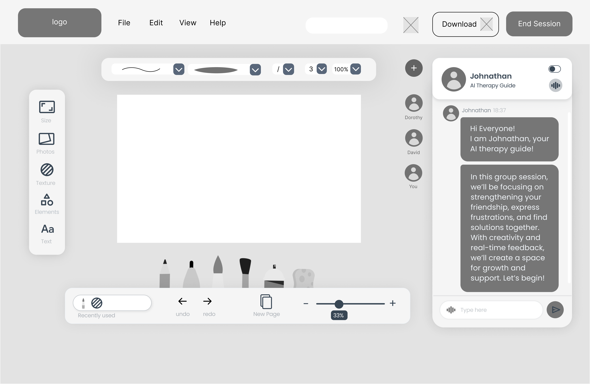
"Johnathan, AI Therapy Guide" — role is explicit, chat is unambiguous.
The progress view doesn't score how you felt. It shows how far you've come.


The arc uses mood symbols as its Y-axis — not clinical scores. Johnathan's weekly reflection is written in plain language. Creations are titled by the person, not the system.
Every colour was chosen for what it does to the nervous system, not what it looks like.
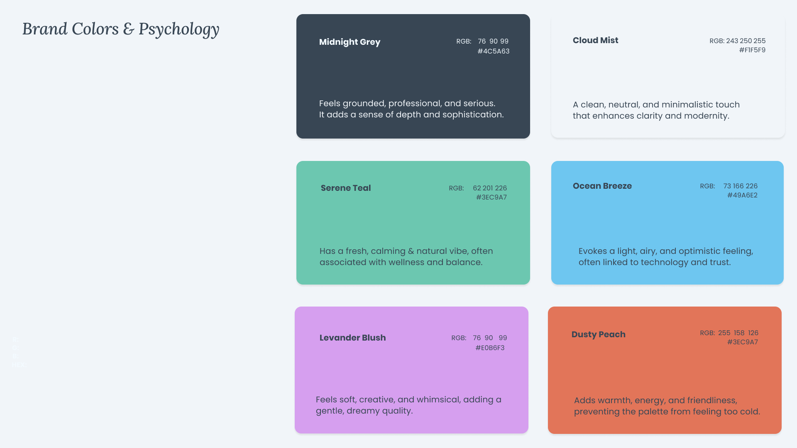
— Serene Teal: calming, associated with nature and wellness. Lowers perceived threat.
— Lavender Blush: soft, creative, slightly whimsical. Reduces clinical association.
— Dusty Peach: warmth without energy. Prevents the palette reading as cold or sterile.
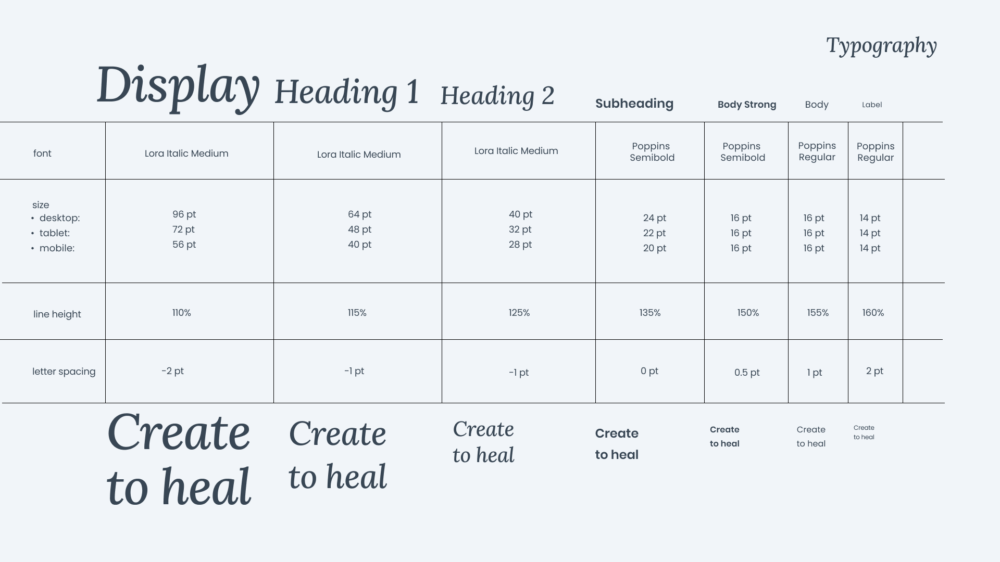
"Create to heal" — the tagline lives in the type specimen, not the hero. It earns its place here.
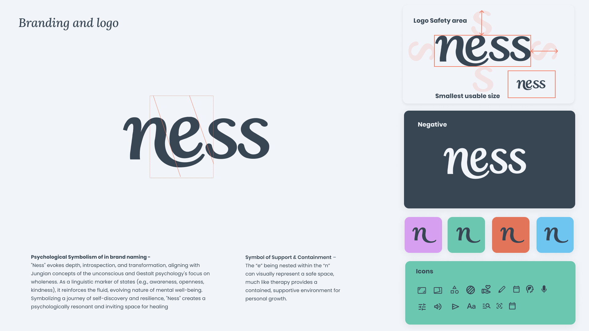
The logotype uses weight contrast to mirror the app's thesis — quiet structure that doesn't shout.
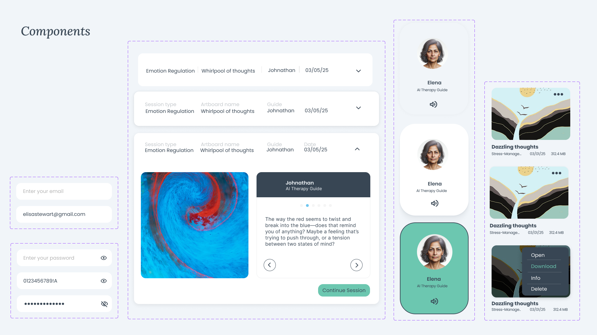
Every component was tested against the emotional register of its context. No sharp shadows. No assertive motion.
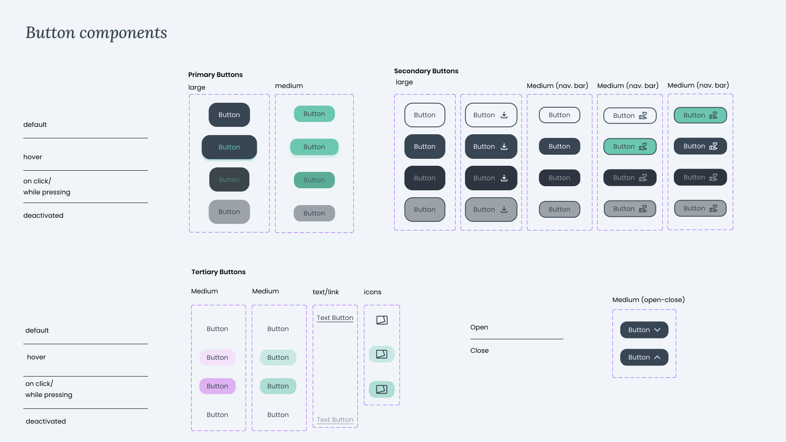
Buttons use rounded corners and generous padding — readable at low focus, never demanding.
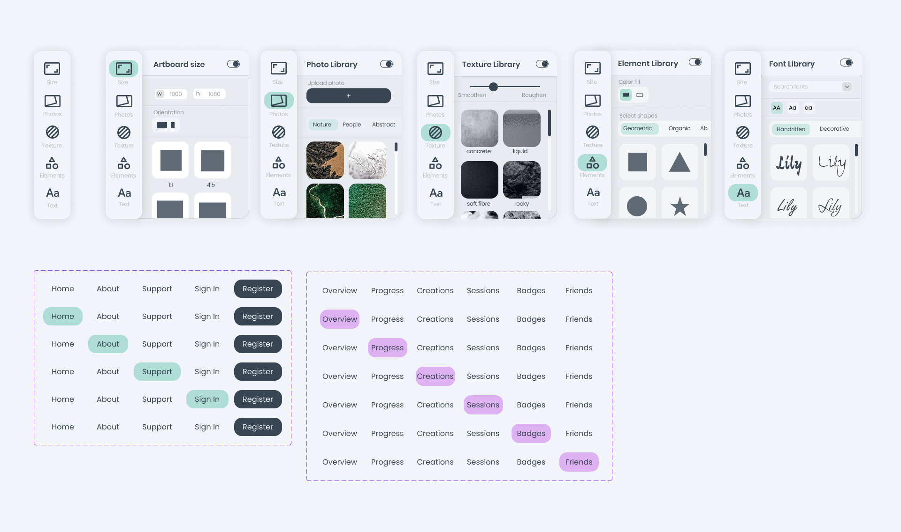
Sliders and selectors replace text inputs wherever possible. The interaction is physical, not linguistic.
What I got wrong.
The check-in asks 'How are you feeling today?' before the person has touched the canvas. That directly contradicts the core thesis — make something first, understand it second. I'd redesign the entry point so the artboard opens first and the check-in follows the session, not precedes it. The data would be richer and the friction would disappear.
You don't need to know what you're feeling to start. That's the whole point.